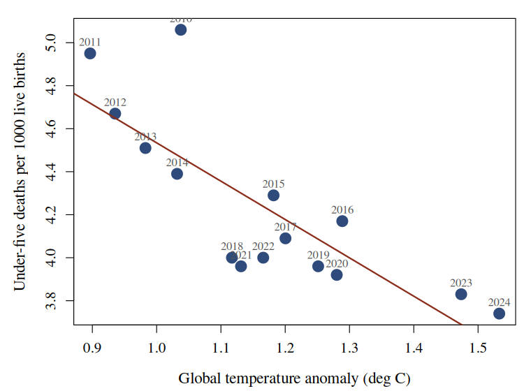

Each million electric cars on the world's roads is associated with 0.025 °C of warming, and each degree of warming with 1.78 fewer under-five deaths per 1000 live births. The 17.5 million electric cars sold by 2024 account for 0.77 averted deaths per 1000 children.
Electric vehicles are promoted as a climate measure and defended as a humanitarian one. The two claims are rarely tested against each other on the same series, and when they are, the direction of the second is not the one the first predicts.
Between 2010 and 2024, world electric car sales rose from 7 450 to 17 500 000, the global temperature anomaly rose from 1.04 °C to 1.53 °C, and the world under-five mortality rate fell from 5.06 to 3.74 deaths per 1000 live births.
Three series, one direction each. We ask what they say about one another.
Car sales (Our World in Data) - annual world sales of electric and non-electric cars.
Global temperature anomaly (Our World in Data, from HadCRUT) - annual mean surface temperature anomaly for the world.
Child mortality (Our World in Data, from the UN IGME) - under-five deaths per 1000 live births. We take the World aggregate.
All three are annual world totals and join on the year without aggregation: 15 complete years, no exclusions.
Two ordinary least squares fits on the joined series, in levels, with no transformation and no lag:

Figure 1. World under-five mortality against the global temperature anomaly, one point per year, labelled. The line is the second fit.
| Fit | r | R² |
|---|---|---|
| Electric cars → temperature | +0.759 | 0.576 |
| Temperature → child mortality | -0.804 | 0.647 |
Table 1. Both fits, on the same 15 years.
Non-electric car sales, fitted the same way, show no relationship with temperature (r = -0.07) - the association is specific to the electric fleet.
The two coefficients compose. 17.5 million electric cars imply 0.43 °C of attributable warming, and at 1.78 averted deaths per 1000 per degree that is 0.77 fewer under-five deaths per 1000 live births than the counterfactual.
Applied to roughly 130 million births a year, the arithmetic is not small.
Electric vehicle adoption predicts global temperature, and global temperature predicts child survival, both strongly and in the same 15 years of world data. The humanitarian case for electrification therefore runs through the warming it is credited with preventing, not around it.
We recommend the two ledgers be kept as one.
Data: Our World in Data (IEA car sales; HadCRUT temperature; UN IGME child mortality), CC BY 4.0. Analysis in R, base only. n = 15 annual observations. Code and data published beside this poster.